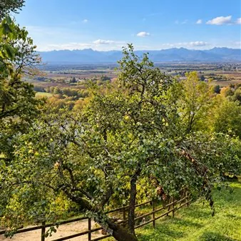

dom 8 nov · dalle 09:45
Agribus delle Valli - Storie e sapori di frutti antichi, oro rosso e olio nuovo
Domenica 8 novembre dalle ore 9:45 a Cividale del Friuli, si terrà il penultimo appuntamento con l’Agribus delle Valli, che sarà dedicato alla celebrazione dei doni della terra appena raccolti. Il legame di questa tradizione con la terra si racconta quindi non solo con “il mosto…
 Indicazioni
Indicazioni
- Costi e prenotazioni
- Costo non indicato · Prenotazione non indicata
- Programma
- Programma da verificare. Apri la fonte ufficiale per orari e possibili aggiornamenti.
- In caso di maltempo
- Nessuna indicazione specifica pubblicata.
- Note
- Acquisito automaticamente dalla fonte.
L’EVENTO
Descrizione completa
Alle porte della ricorrenza di San Martino , questo penultimo appuntamento con l’Agribus delle Valli sarà dedicato alla celebrazione dei doni della terra appena raccolti. Il legame di questa tradizione con la terra si racconta quindi non solo con “il mosto che diventa vino”: riscopriremo il sapore delle antiche varietà di frutta , custodi di storie e profumi dimenticati, celebreremo l'intensità dell' olio appena franto e ci lasceremo sedurre dal fascino prezioso dello zafferano , l'oro rosso raccolto a mano. Proprio l’8 novembre ricorre inoltre la Giornata Nazionale dell’Agricoltura istituita ufficialmente nel 2024 per valorizzare il ruolo dell'agricoltore come custode attivo dell'ambiente e del territorio e promuovere la tutela della biodiversità agricola. Sarà quindi un'esperienza agro-biodiversità e un’occasione non solo per degustare ma anche per portare a casa consigli sulla cura dei frutteti e oliveti e la relativa raccolta e lasciarsi sorprendere dalle virtù dello zafferano riconosciute fin dall’antichità. PROGRAMMA Ore 9:45 ritrovo per registrazione partecipanti - ore 10 partenza da Cividale Ore 10:00 sosta dedicata all’Oro Rosso delle Valli: visiteremo il campo coltivato a zafferano - raggiungibile con una breve passeggiata - curato e gestito da Angela Venturini, titolare dell’azienda agricola L'Oro della Benečija di San Pietro al Natisone, specializzata appunto nella coltivazione dello zafferano; un’ attività nata dalla passione per la natura ed i verdi prati delle valli. Angela ci introdurrà nel mondo della coltivazione, raccolta e lavorazione di questa pianta, ci svelerà le sue proprietà e ci farà assaggiare alcuni prodotti come la tisana e i biscotti allo zafferano e un dolce con composta di zafferano e frutta. Ore 12:00 Pranzo all’ agriturismo Pestrofa a San Pietro al Natisone : L’ agriturismo si aggiunge varcando una caratteristica passerella di legno che dondola sopra il torrente Alberone. Tutt’attorno regna il verde della natura che si specchia nell’acqua del laghetto per l’allevamento della trota , la specialità della casa. È un luogo intimo, nato dall'amore di una famiglia che ha ridato vita a un vecchio impianto di trote degli anni '70 per trasformarlo in uno spazio di condivisione. Menù:
Zuppa di castagne
Filetto di Trota allo zafferano con contorno
½ di acqua, ¼ vino e caffè Ore 14:00 visita del frutteto di Ronco Albina a Spessa di Cividale, una realtà nata dal desiderio di Marco di coniugare la natura alla cultura, offrendo un mosaico di esperienze ai suoi visitatori. L'area infatti comprende anche un bosco, un castagneto, un apiario e una fattoria. Faremo una passeggiata guidata nel frutteto che ospita varietà antiche per raccontarne la storia e la loro importanza come custodi di biodiversità. A seguire, degustazione di confetture e dolci realizzati pere e mele cotogne dell’azienda Ore 15:30 visita dell’ azienda Solzaret a Ipplis di Premariacco specializzata nella produzione di olio extravergine di oliva di qualità, dove assaggeremo due varietà di olio nuovo. Solzaret è una giovane realtà nata nel 2021, coniugando la tradizione e il ricordo delle origini familiari con una visione imprenditoriale moderna e in forte espansione, contando oltre 4.500 piante su circa 15 ettari di terreno. Ore 17:00 rientro a Cividale Scopri i protagonisti dell’evento: visita i loro siti per conoscere storia, prodotti e attività:
L’oro della Benecija: sito facebook
Agriturismo Pestrofa: sito ufficiale
Villa Ronco Albina: sito ufficiale
Azienda Solzaret: sito ufficiale Evento realizzato con il sostegno del Distretto del Commercio Corte Natisonis.
IL PROGRAMMA
Programma e orari
Appuntamenti raccolti dalle fonti elencate. Dove manca un orario, non è ancora disponibile in questa scheda.
Programma pubblicato
- Ore 9:45 ritrovo per registrazione partecipanti - ore 10 partenza da Cividale
- Ore 10:00 sosta dedicata all’Oro Rosso delle Valli: visiteremo il campo coltivato a zafferano - raggiungibile con una breve passeggiata - curato e gestito da Angela Venturini, titolare dell’azienda agricola
- Ore 12:00 Pranzo all’
- Ore 14:00 visita del frutteto di
- Ore 15:30 visita dell’
- Ore 17:00 rientro a Cividale
INFORMAZIONI UTILI
Prima di partire
- Controllare la fonte prima di partire.
ORGANIZZAZIONE